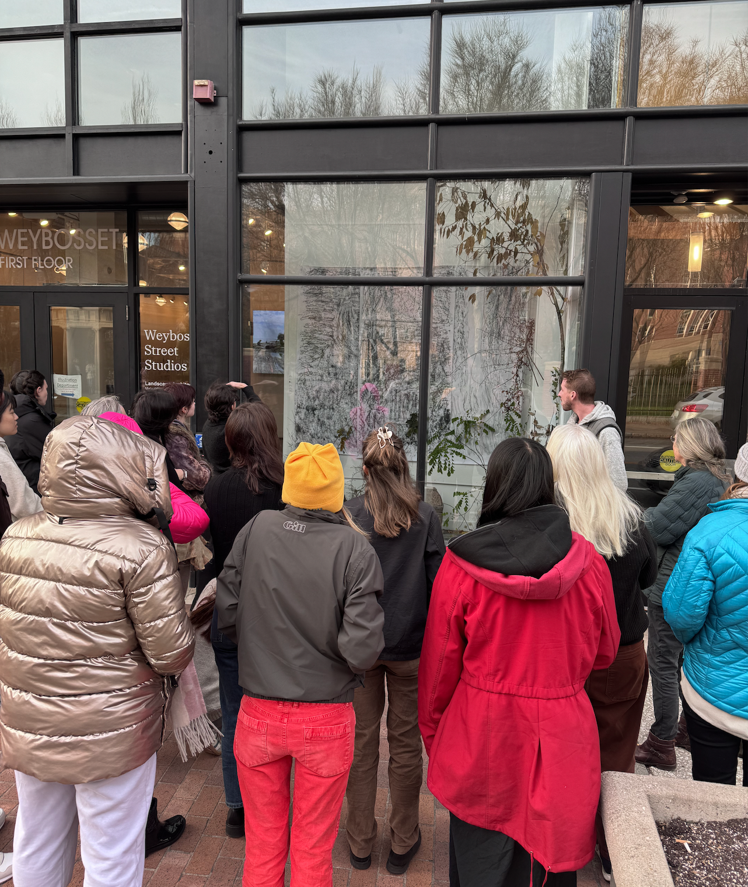
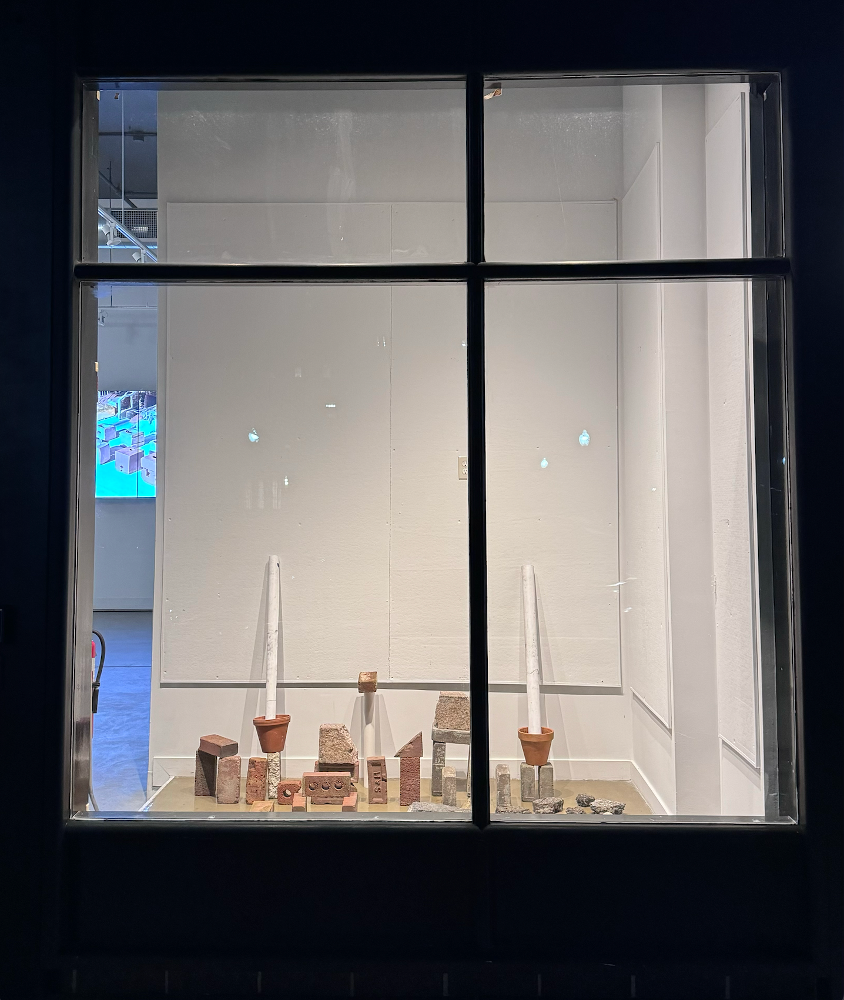
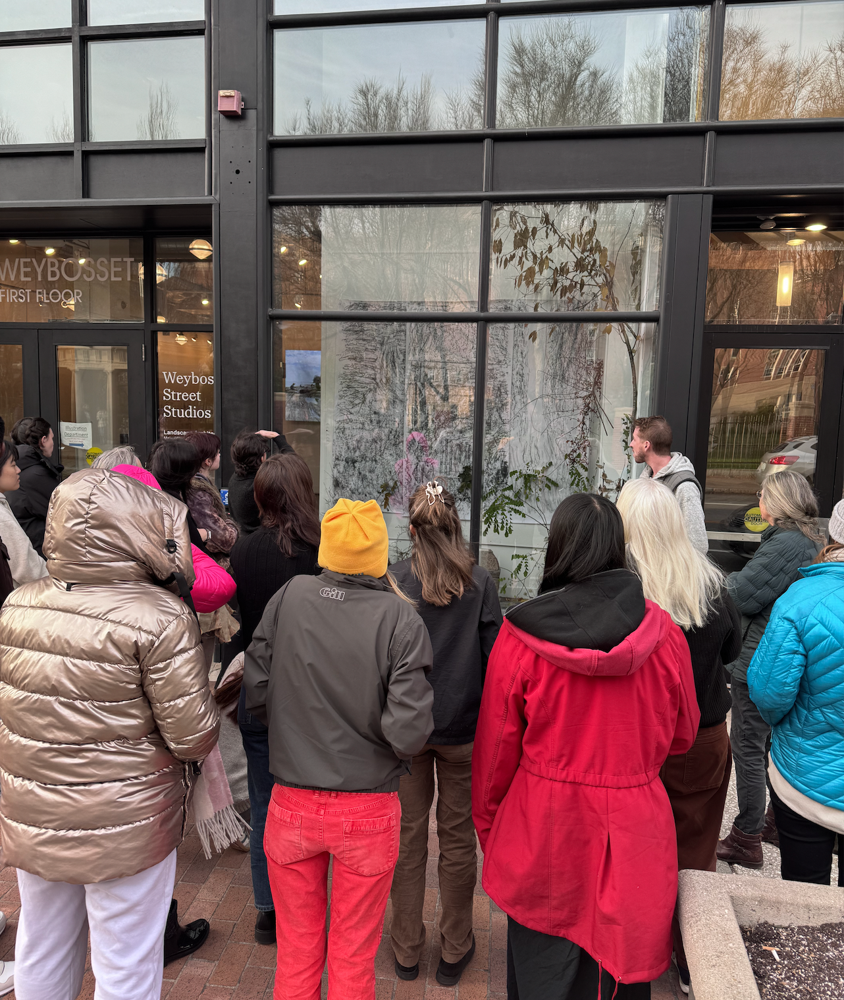
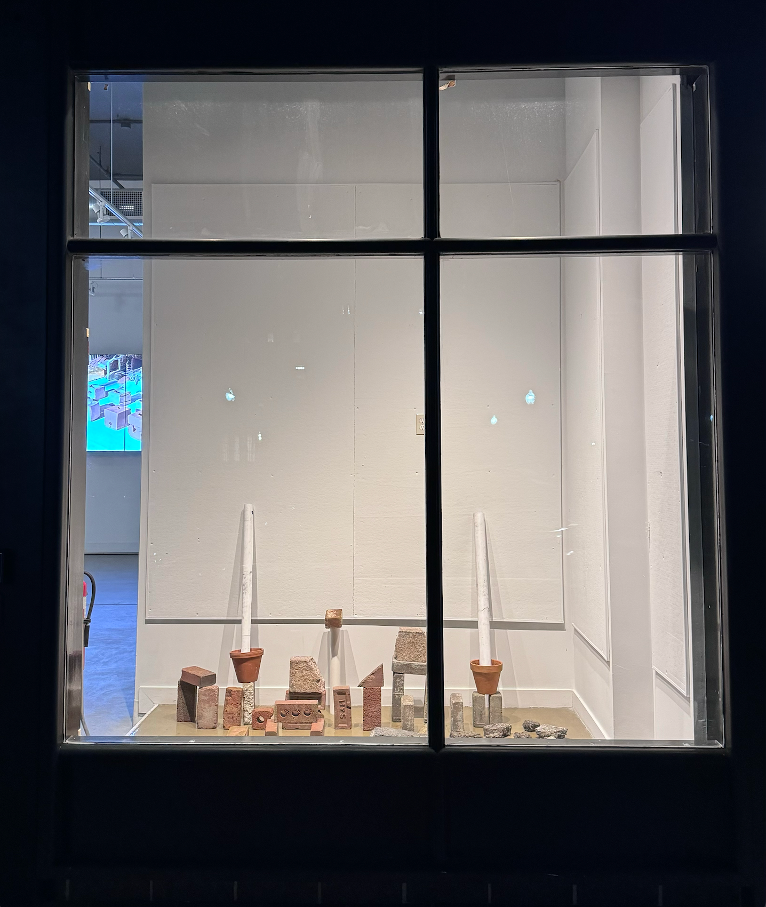

Pigments from the Land
4”x6" (24 pages) black walnut ink (harvested in lincoln, ri), white pine charcoal (harvested in exeter, ri), cement, plaster, egg carton paper (made in montréal, qc), vellum, linen thread.LDAR 2251 Material Logic / Gavin Zeitz & Courtney Goode Fall 2023


 



 1 of 2.png)
 2 of 2.png)